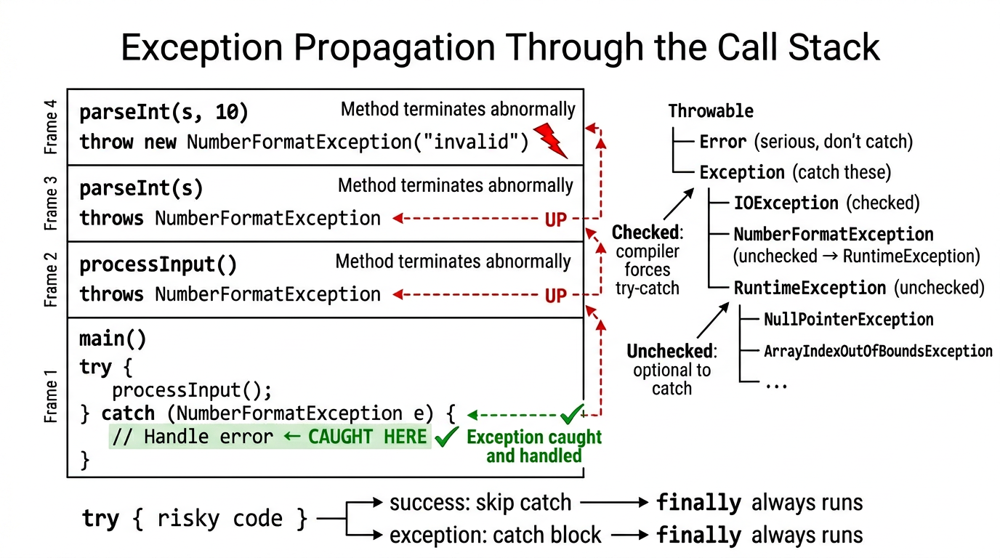

Exceptions — COMP0004 Object-Oriented Programming (UCL)¶
Lecture-style notes aligned with Slide deck 8: runtime errors, the exception mechanism, checked vs unchecked exceptions, try / catch / finally / try-with-resources, propagation, custom exceptions, strategies (including Optional), and the checked exceptions debate.
1. COMPLETE TOPIC SUMMARIES¶
Runtime errors — when “correct syntax” still fails¶
Programs fail at runtime for many reasons beyond compile-time type checking:
- Logic bugs — wrong algorithm, off-by-one, incorrect assumptions.
- Unanticipated user behaviour — empty input, letters where numbers expected, files missing.
- Environment / service failures — disk full, network down, database unavailable.
These situations need a disciplined reaction model. In Java, exceptions are the primary structured mechanism for non-local control flow when something goes wrong.
Exceptions — signalling failure¶
An exception is an object (usually a Throwable subtype) thrown at the point of failure. If nothing catches it, the thread unwinds and the program may terminate after printing a stack trace.
Beginner intuition: A return says “here is a normal result.” A throw says “I cannot complete this operation as intended; here is why (encoded as an exception object).”
Call stack trace¶
When an exception is printed (often uncaught), the stack trace lists active method calls from innermost (where throw happened) outward. Reading it is a core debugging skill: find the first line in your code, then ask what inputs or state caused it.
NullPointerException (NPE)¶
NullPointerException is thrown when you use a null reference as if it were an object — e.g. calling someRef.method() when someRef is null. It is an RuntimeException (unchecked): the compiler does not force you to declare or catch it. Prevention: validate references, use defensive coding, or Optional for explicit absence (see below).
Checked vs unchecked exceptions¶
| Kind | Extends | Compiler | Typical meaning |
|---|---|---|---|
| Checked | Exception but not RuntimeException |
Caller must catch or declare throws |
Expected recoverable conditions (I/O, parsing, missing files). |
| Unchecked | RuntimeException (or Error) |
Optional to handle | Often programming bugs or failures you rarely recover from (NullPointerException, IllegalArgumentException). |
Error (e.g. OutOfMemoryError) is unchecked but usually not caught in application code — it signals serious JVM/resource problems.
Error-handling strategies (Stack example mindset)¶
Using a stack ADT as a narrative, lectures often contrast strategies:
- Ignore — silently wrong behaviour (bad); violates correctness.
- Print message + return
null— error disappears locally but forces every caller to remembernullchecks; easy to forget →NullPointerExceptionlater. System.exit— abrupt termination; may lose unsaved data and gives no structured recovery.assert— excellent in development to document invariants; can be disabled at runtime (-ea), so not a substitute for validating user-facing input in production.- Throw an exception — forces callers (for checked) or at least documents failure (unchecked); centralises non-local recovery.
- Return
Optional<T>— for local, expected “value or nothing” outcomes without abusing exceptions.
Best practice big picture: use exceptions for exceptional control flow; use Optional (or sensible defaults) for ordinary absence when the caller is the right place to decide.
Exceptions vs Optional<T>¶
| Tool | Best when |
|---|---|
| Exception | Failure is surprising or needs to abort several layers; multiple recovery policies possible upstream; checked exceptions document mandatory handling for API contracts (e.g. I/O). |
Optional<T> |
A method normally might have no result (find by key); caller handles locally without try/catch ceremony. |
Optional<User> findUser(String id) { ... } // expected "maybe none"
void readConfig(Path p) throws IOException { ... } // IO failure is exceptional for many apps
Java exception syntax: try, catch, throw, throws, finally¶
throw— create and throw an exception object:throw new IllegalArgumentException("bad");try/catch— try risky code; catch specific types to recover or rethrow / wrap.throws— method signature declares checked exceptions that may escape; callers must handle or declare.finally— runs always aftertry(whether success, exception, orreturn) — classic cleanup (often replaced by try-with-resources for closables).
public int parsePositive(String s) throws NumberFormatException {
int v = Integer.parseInt(s);
if (v <= 0) {
throw new IllegalArgumentException("must be positive");
}
return v;
}
try with multiple catch blocks and multi-catch¶
Catch most specific exceptions first; broader catches after.
Multi-catch (Java 7+): catch (IOException | SQLException ex) — shared handler; ex is effectively final.
try {
risky();
} catch (FileNotFoundException e) {
// specific recovery
} catch (IOException e) {
// broader IO recovery
}
finally¶
Use finally to release resources or restore invariants when try may exit in many ways. Pitfall: swallowing exceptions in catch without logging; another pitfall: finally that throws — can mask the original exception.
Try-with-resources — AutoCloseable¶
For objects that must be closed (InputStream, BufferedReader, etc.), try-with-resources guarantees close() is called automatically (with suppressed exception handling rules).
try (BufferedReader br = Files.newBufferedReader(path)) {
return br.readLine();
} // br.close() called automatically
The resource type must implement AutoCloseable (or Closeable).
Exception class hierarchy (core exam diagram)¶
ThrowableError— serious JVM / resource problems; do not usually catch.ExceptionRuntimeExceptionand subclasses — unchecked- Other
Exceptionsubclasses — checked (e.g.IOException)
RuntimeException is for conditions that need not be declared in every signature — often programmer mistakes or precondition violations.
Custom exception classes¶
Extend Exception (checked) or RuntimeException (unchecked). Provide constructors forwarding message and cause (Throwable).
public class EmptyStackException extends Exception {
public EmptyStackException() {
super("stack is empty");
}
public EmptyStackException(String message) {
super(message);
}
}
Choose checked if recovery is expected and callers must plan; unchecked if it indicates bug or caller precondition failure.
throws and compile-time checking¶
A method that can throw a checked exception without catching it must declare throws IOException (etc.). The compiler enforces that every caller either catches or declares — this is the “checked exception contract.”
Exception propagation¶
If methodA calls methodB and methodB throws an uncaught exception, execution of methodB stops; methodA gets a chance to catch; if not, the exception propagates up until a catch handles it or the thread terminates. This is non-local control flow — powerful but easy to misuse if every layer logs and rethrows without adding context.

{kind=link}
parseInt loop — practical input validation¶
Interactive programs often loop until input parses:
Scanner sc = new Scanner(System.in);
int n = 0;
boolean ok = false;
while (!ok) {
System.out.print("Enter an int: ");
String line = sc.nextLine();
try {
n = Integer.parseInt(line);
ok = true;
} catch (NumberFormatException e) {
System.out.println("Not an integer — try again.");
}
}
Here NumberFormatException is unchecked, but catching it is appropriate for user input recovery.
When to use exceptions — and when not to¶
Good uses:
- Violated preconditions you cannot fix locally (
IllegalArgumentException). - I/O and system failures (
IOException). - Cannot complete business operation without misleading return values.
Poor uses:
- Routine control flow (
breaka loop by throwing — expensive, confusing). - Expected “not found” in tight inner loops where
Optionalornull-free APIs are clearer. - Catching
ExceptionorThrowablebroadly without rethrowing or logging — hides bugs.
Controversy: checked exceptions¶
Defence of checked exceptions: They make failure modes visible in signatures; callers must confront I/O reality — good for reliability in large teams.
Criticism: Boilerplate (throws chains), API evolution pain, poor interaction with lambdas / functional style, and temptation to catch (Exception e) {} — the worst of both worlds.
Modern Java APIs and many libraries lean on unchecked for many cases; checked remains important for IOException-style recoverable conditions. Exam angle: be able to argue both sides with concrete trade-offs.
2. EXAM-STYLE QUESTIONS (WITH MODEL ANSWERS)¶
Q1. Explain the difference between checked and unchecked exceptions in Java. Give one example of each and state what the compiler enforces.¶
Model answer: Checked exceptions extend Exception but not RuntimeException (e.g. IOException). The compiler requires that they be caught with try/catch or declared in the method throws clause; callers must continue this contract. Unchecked exceptions extend RuntimeException (e.g. NullPointerException, IllegalArgumentException) or are Error types; the compiler does not force handling. Checked signals expected recoverable conditions; unchecked often signals bugs or precondition failures.
Q2. What is a stack trace? Using a small example, describe how you would use it to locate a bug.¶
Model answer: A stack trace is the list of active method calls at the moment an exception is thrown/printed, from innermost frame to outermost. The top lines usually include the exception type and message; the first frame in your package often pinpoints the exact line that failed. You then inspect inputs, nullability, and preconditions for that line and work outward to see which caller supplied bad state.
Q3. Compare strategies (5) throw exception vs (6) return Optional for a Stack.pop-style operation. Which fits expected empty stack in a parser?¶
Model answer: Throwing (e.g. EmptyStackException) signals abnormal use: callers must try/catch or propagate — good when emptiness is a logic error that should abort a larger process. Optional<T> fits when absence is a normal outcome the immediate caller can branch on (ifPresent, orElse). For a parser, unexpected pop on empty often indicates bad grammar / input — many designs use exception or result type to fail fast; if “try pop” is part of backtracking, Optional might model “no token” cleanly without exceptions for control flow.
Q4. Write or sketch the try-with-resources pattern. Why is it preferable to manual finally with close()?¶
Model answer:
Resources declared in parentheses implement AutoCloseable; close() is invoked automatically in all exit paths, with suppression rules if close also throws. It reduces boilerplate, avoids forgetting close() on early return, and is less error-prone than hand-written finally blocks.
Q5. Why might catch (Exception e) { } be considered harmful? What should you do instead?¶
Model answer: An empty catch swallows all checked+unchecked exceptions under Exception, including bugs (NullPointerException) and OutOfMemoryError is not under Exception but the same anti-pattern exists for Throwable). It hides failures, breaks invariants, and makes debugging impossible. Prefer catch specific types, log with context, recover if meaningful, or rethrow/wrap (throw new ServiceException("...", e)) to preserve cause.
3. MUST-KNOW KEY POINTS¶
- Exceptions signal abnormal situations; uncaught → thread unwinds / termination + stack trace.
NullPointerException— unchecked; dereferencingnull.- Checked =
ExceptionnotRuntimeException— mustcatchorthrows. - Unchecked =
RuntimeException/Error— no compiler enforcement. - Strategies: avoid ignore / careless
nullreturns /System.exitfor routine errors;assertfor dev invariants; exceptions for serious / non-local failure;Optionalfor local “maybe” results. try/catch/finally, multi-catch, try-with-resources forAutoCloseable.- Hierarchy:
Throwable→ Error / Exception → RuntimeException`. - Custom exceptions:
extends ExceptionorRuntimeException, constructors with message/cause. throwspropagates checked exceptions; propagation up the call stack untilcatch.parseInt+ loop pattern for robust input.- Debate: checked exceptions — reliability vs ergonomics.
4. HIGH-PRIORITY TOPICS¶
🔴 Must Know¶
- Checked vs unchecked — definitions, compiler rules, examples
try/catch/finallyexecution order (includingreturninteractions — conceptually)throwvsthrows— statement vs clause- Exception hierarchy —
Throwable,Exception,RuntimeException,Error - Try-with-resources and
AutoCloseable - Propagation — who handles what when
catchis absent
🟡 Important¶
- Reading stack traces
NullPointerExceptioncauses and prevention- Multi-catch syntax and ordering of
catchblocks - Custom exception design (message, cause)
- Input validation loops (
NumberFormatException) - When not to use exceptions (control flow, swallowing
Exception)
🟢 Useful¶
assertsemantics (disabled without-ea)- Suppressed exceptions in try-with-resources (advanced)
- Wrapping exceptions to preserve cause (
initCause/ constructor) - Checked exceptions controversy — articulate trade-offs
5. TOPIC INTERCONNECTIONS & BIGGER PICTURE¶
- Exceptions connect correctness, API design, and user experience: they encode contracts (“this method may fail because of I/O”).
- Checked exceptions push reliability into signatures;
Optionaland unchecked errors push it into documentation and discipline — different philosophies of the same problem: failure is data. - Try-with-resources links exceptions to resource management (files, sockets) — a preview of RAII-like thinking in a garbage-collected language.
- Stacks / ADTs in lectures illustrate preconditions (pop on empty): the same scenario appears in design by contract, assertions, and tests.
- Parsing ties to validation — a bridge to defensive programming and later parsing / file topics in the module.
6. EXAM STRATEGY TIPS¶
- Label answers with checked vs unchecked using the
RuntimeExceptionboundary, not vague “compiler error” wording. - Draw the small hierarchy (
Throwablesplit) if a question asks for “structure” — quick marks. - For code questions, show
throws IOExceptionon signatures whenFiles.read...appears withoutcatch. - Mention
finallyvs try-with-resources when the question involvesclose(). - If asked “is this good style?” on empty catch, answer no and give logging / rethrow / specific type as the fix.
- For discursive questions, use two short paragraphs: pro checked (explicit contracts, I/O) and con checked (verbosity, lambdas, API evolution).
End of notes — Exceptions (Slide deck 8).